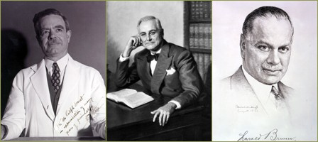
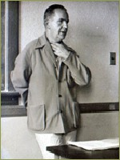
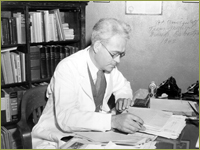
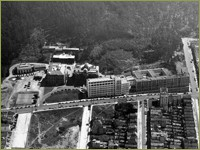
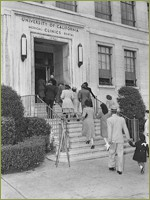

{% include nav.html %}
In 1937, John Saunders became chair of the Anatomy Department and continued his role as a popular instructor and authority on the history of anatomy.
Clinical training expanded under the tutelage of full-time chair in Medicine William J. Kerr, a Harvard-trained physician with a strong interest in cardiology, and master clinicians like LeRoy Briggs.
Harold Brunn developed thoracic surgery at the County hospital and revitalized the teaching programs at Mt. Zion Hospital, while Howard Naffziger dominated surgery at Parnassus. As one of Harvey Cushing's close colleagues and a graduate of Johns Hopkins, Naffziger brought surgical prestige to the Parnassus campus and developed several unique neurosurgical operations which brought him national recognition. Once Naffziger was made full-time head of surgery in 1929, he developed an advanced residency training program at Parnassus in the tradition of the nation's most revered surgical mentor, William S. Halsted.
As experimental biology prospered at Berkeley, other basic science instruction took root in San Francisco. It is difficult to decipher from the historical record who deserves the most credit for this turn to science instruction. University President Robert Sproul was interested in uniting all the health professions at Parnassus and he lent support for the creation of new departments. Langley Porter’s recruitment of Chauncey Leake, coupled with parallel changes in the College of Pharmacy contributed to a remarkable development of basic research in pharmacology and pharmaceutical chemistry in the 1930s. Something of a polymath, Chauncey Leake taught the first formal course in the history of medicine on the San Francisco campus in 1929 and the following year the Department of Medical History was created. He also assumed the post of campus librarian.
By 1938, just a year after C.L.A. Schmidt was appointed Dean of Pharmacy, a college press release announced that remodeling in progress would make it “one of the best plants for the teaching of pharmacy in the country….” This project involved installing a central still for distilled water, modern lecture rooms, student research labs, space for housing animals, a shop for glass blowing and modern lab equipment. The program was designed to train pharmacists in the manufacture of drugs and sick room chemicals, provide inspection of drugs and cosmetics, and to pursue careers in food chemistry, sugar chemistry, pharmacology, dairy chemistry, narcotic law enforcement, wine chemistry, chemical control of water supplies, and hospital pharmacy. During the last years of the decade, Schmidt announced the school’s involvement in research that “improve[s] over nature by synthesizing in the lab chemical substances that have specific effects in the alleviation and treatment of disease.” He described projects conducted by John Oneto on ephedrine compounds, and Troy Daniels with new sulfanilamide drugs. In 1937 a graduate program in pharmaceutical chemistry was added to the School of Pharmacy’s offerings and the first M.S. was awarded in 1940 and the Ph.D. in 1942.
Dentistry occupied the sixth and seventh floors and new space provided not only opportunity for improved facilities but created unprecedented cooperation with other schools housed in the building. Upon the opening of the Clinics Building in 1934, officials observed, “consultation with members of the medical faculty concerning unusual cases are easily possible to the reciprocal advantage of the students and members of the faculties in both the medical and dental schools.” Consolidation of dentistry’s roentgenology lab with that of the UC Hospital department was also seen as “providing opportunity for a broader understanding of this science and the means for effective coordination among physicians and dentists in the field of Roentgenological diagnosis.” Although some of this rhetoric undoubtedly was designed to fulfill the expectations outlined in the Gies Report a decade earlier, there is ample evidence that the arrangement of the Clinics building created a greater integration of the colleges and the training school. Nursing was able to move offices from the Dormitory building into the clinics space, and pharmacy occupied dispensary space on the ground floor.
physicians and dentists in the field of Roentgenological diagnosis.” Although some of this rhetoric undoubtedly was designed to fulfill the expectations outlined in the Gies Report a decade earlier, there is ample evidence that the arrangement of the Clinics building created a greater integration of the colleges and the training school. Nursing was able to move offices from the Dormitory building into the clinics space, and pharmacy occupied dispensary space on the ground floor.
>> Campus Life in the Great Depression
1919–1939 The Formation of Schools and the Rise of Clinical Science Instruction
Strengthening Clinical and Science Instruction at Parnassus

William J. Kerr, LeRoy Briggs, Harold Brunn
In 1937, John Saunders became chair of the Anatomy Department and continued his role as a popular instructor and authority on the history of anatomy.
Clinical training expanded under the tutelage of full-time chair in Medicine William J. Kerr, a Harvard-trained physician with a strong interest in cardiology, and master clinicians like LeRoy Briggs.
Harold Brunn developed thoracic surgery at the County hospital and revitalized the teaching programs at Mt. Zion Hospital, while Howard Naffziger dominated surgery at Parnassus. As one of Harvey Cushing's close colleagues and a graduate of Johns Hopkins, Naffziger brought surgical prestige to the Parnassus campus and developed several unique neurosurgical operations which brought him national recognition. Once Naffziger was made full-time head of surgery in 1929, he developed an advanced residency training program at Parnassus in the tradition of the nation's most revered surgical mentor, William S. Halsted.

This involved an extended hierarchical training system for surgical residents that included substantial work in surgical research in an animal laboratory provided expressly for that purpose. Naffziger's successor, H. Glenn Bell, carried on this tradition, and UC became known for its consistent training of expert technical surgeons.
H. Glenn Bell
As experimental biology prospered at Berkeley, other basic science instruction took root in San Francisco. It is difficult to decipher from the historical record who deserves the most credit for this turn to science instruction. University President Robert Sproul was interested in uniting all the health professions at Parnassus and he lent support for the creation of new departments. Langley Porter’s recruitment of Chauncey Leake, coupled with parallel changes in the College of Pharmacy contributed to a remarkable development of basic research in pharmacology and pharmaceutical chemistry in the 1930s. Something of a polymath, Chauncey Leake taught the first formal course in the history of medicine on the San Francisco campus in 1929 and the following year the Department of Medical History was created. He also assumed the post of campus librarian.

Meanwhile Leake’s major interest was in pharmacological research and he quickly developed a strong instructional program in anesthesia, blood formation, and chemotherapy. His acquaintance with Berkeley Biochemist C.L.A. Schmidt turned into active collaboration when, in 1937, Schmidt was appointed Dean of Pharmacy at San Francisco. By this time, the College of Pharmacy was fully integrated into the University and the Regents took over responsibility for the school. In 1929, a physical chemist, Troy Daniels, arrived to do important basic research in physical chemistry. Through Schmidt, Troy Daniels, and Chauncey Leake, a collegial synergy was formed to promote basic research in biophysics and chemistry in connection with the Schools of Pharmacy and Medicine.
Chauncey Leake
By 1938, just a year after C.L.A. Schmidt was appointed Dean of Pharmacy, a college press release announced that remodeling in progress would make it “one of the best plants for the teaching of pharmacy in the country….” This project involved installing a central still for distilled water, modern lecture rooms, student research labs, space for housing animals, a shop for glass blowing and modern lab equipment. The program was designed to train pharmacists in the manufacture of drugs and sick room chemicals, provide inspection of drugs and cosmetics, and to pursue careers in food chemistry, sugar chemistry, pharmacology, dairy chemistry, narcotic law enforcement, wine chemistry, chemical control of water supplies, and hospital pharmacy. During the last years of the decade, Schmidt announced the school’s involvement in research that “improve[s] over nature by synthesizing in the lab chemical substances that have specific effects in the alleviation and treatment of disease.” He described projects conducted by John Oneto on ephedrine compounds, and Troy Daniels with new sulfanilamide drugs. In 1937 a graduate program in pharmaceutical chemistry was added to the School of Pharmacy’s offerings and the first M.S. was awarded in 1940 and the Ph.D. in 1942.
“despite the depression there has been a greater demand for graduates of the College of Pharmacy than we have been able to meet.”
- C.L.A. Schmidt, Dean of Pharmacy, July 15, 1938
- C.L.A. Schmidt, Dean of Pharmacy, July 15, 1938

In 1934, after intense lobbying, the state legislature allocated $600,000 for a 103,160 square foot Clinics Building designed to house the growing outpatient teaching service at Parnassus. This facility was quickly filled to capacity with small offices, making medical and dental care available to San Francisco citizens regardless of their ability to pay. It also served a function in uniting activities of all the colleges and the training school. Although dentistry, pharmacy, medicine and the training school formerly occupied space in distinctly defined buildings, Aerial view: UCSF campus before Moffitt Hospital was built. Note the Clinics building adjacent to UC Hospital.

and maintained them as architectural territory, after the mid-1930s they shared commingled space on the floors of the Clinics building.
Entrance to the Clinics building.
Dentistry occupied the sixth and seventh floors and new space provided not only opportunity for improved facilities but created unprecedented cooperation with other schools housed in the building. Upon the opening of the Clinics Building in 1934, officials observed, “consultation with members of the medical faculty concerning unusual cases are easily possible to the reciprocal advantage of the students and members of the faculties in both the medical and dental schools.” Consolidation of dentistry’s roentgenology lab with that of the UC Hospital department was also seen as “providing opportunity for a broader understanding of this science and the means for effective coordination among
Photo of the top floor dentistry clinic.
>> Campus Life in the Great Depression
{% include footer.html %}